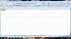
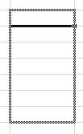
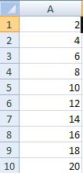
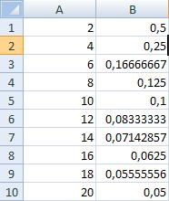
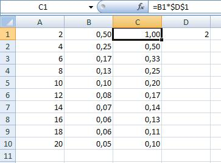
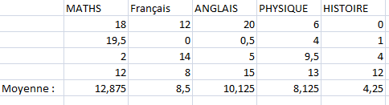
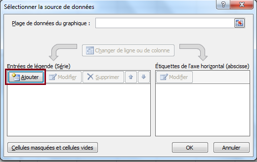
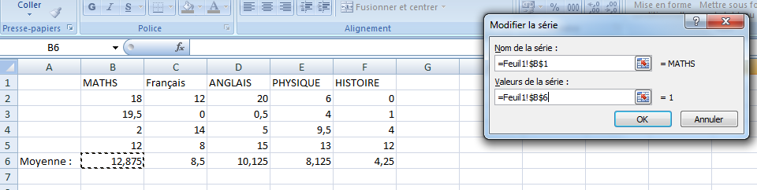
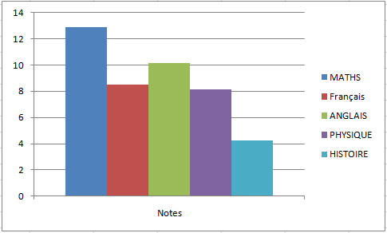

Excel est un tableur créé par la société Microsoft. Il a été conçu sous forme de cellules repérées grâce à l'adressage que l'on va voir bientôt. Il est très utilisé pour faire des calculs, surtout des tableaux, et des graphiques.
Un peu de vocabulaire...
Un document Excel est appelé classeur.
Chaque classeur possède trois feuilles de calcul à la base, on peut les voir en bas à gauche du classeur. On peut ajouter des feuilles à sa guise en cliquant sur ce bouton :
Certains d'entre vous ont déjà joué aux dames, ou à la bataille navale ? Eh bien sur Excel, c'est à peu près la même chose.
L'adressage est là pour bien se repérer.
Une cellule est toujours repérée par deux symboles : un nombre et une lettre. La lettre permet de repérer une cellule verticalement. Le nombre permet de repérer une cellule horizontalement.
Si par exemple je vous dis : "repérez-moi la cellule E3", vous cherchez le E, ensuite vous descendez jusqu'à 3.
Pour résumer, on peut dire que l'adressage, c'est les coordonnées d'une cellule.
Ça me servira pour vous indiquer dans quelles cellules il vous faudra travailler ;
ça permet aussi d'indiquer à Excel les cellules concernées par ce que l'on veut faire. (Par exemple, si l'on veut faire une addition, il faudra lui indiquer les cellules qu'on veut additionner).
Allez, on commence facile ! Ouvrez Excel, vous devriez voir ceci :
Pour commencer, on va se dire que l'on est en fin de trimestre, et que l'on veut nos notes.
En A1, tapez MATHS ; en B1, FRANÇAIS ; en C1, ANGLAIS ; en D1, PHYSIQUE ; et en E1, HISTOIRE. Ensuite, en-dessous de chacune de ces matières, mettez des notes (environ 4). Par exemple, prenons la matière MATHS : en A2, mettez 18 ; en A3, 19.5 ; en A4, 2 (non, je n'ai pas oublié de 0 ^^ ) ; et en A5, 12. Faites ceci pour toutes les matières (en changeant les notes et en restant modestes
).
Pour les flemmards vous pouvez le télécharger ici : Clic droit > Enregistrer la cible du lien sous. :p
Bon, maintenant, on va faire quelque chose d'un peu plus compliqué. ... Y a quelqu'un ? :euh:
On va essayer de trouver le total des notes de MATHS avec une fonction. Mettez (dans la cellule dans laquelle vous voulez voir le résultat) 18 + 13 + 19.5 + 12 ; appuyez sur Entrée, et là... ... ===> Ça n'affiche pas le résultat ! :waw:
Pour toutes les opérations qu'on devra faire (ou du moins, pour la majorité), on devra prendre ce qui suit comme base : =FONCTION(CELLULE1;CELLULE2)
Explications
Tout d'abord, on doit commencer par indiquer à Excel que ce qui suit est une fonction : on doit utiliser le signe =. Ensuite, il faut lui indiquer quel type d'opération c'est. On ne lui donne pas le nom de l'opération (par exemple, addition), mais le nom du résultat (par exemple, somme). Vous devez ensuite mettre le nom des cellules à additionner, entre parenthèses, séparées par un point-virgule.
Maintenant que je viens de vous expliquer tout ça, on va pouvoir commencer. :)
Si l'on veut calculer la somme de 2 notes de MATHS par exemple, on doit d'abord indiquer à Excel qu'on veut faire une addition, et ensuite lui indiquer les cellules concernées.
=SOMME(A2;A5) et appuyez sur Entrée !
Et là, que voyez-vous ? ... ===> Votre résultat s'affiche ! :D
Soustractions
On va soustraire A2 et A3. Pas plus difficile :
=DIFFERENCE(A2;A3)
On attaque les multiplications !
Multiplications
Imaginons qu'on veuille multiplier A2 et A3. C'est la même chose que pour les soustractions, il faut juste changer DIFFERENCE par ... PRODUIT !
=PRODUIT(A2;A3)
Divisions
Cette fois-ci, ça sera QUOTIENT.
Ça nous donne donc :
=QUOTIENT(A2;A3)
Chiffre maximum
Ce n'est pas très compréhensible dit comme ça, mais si je vous explique, je suis sûr que ça va aller mieux. ;) Si par exemple on a une liste de notes de MATHS et qu'on veut tirer la meilleure note sans comparer les chiffres un à un, on utilise cette fonction.
Ce n'est pas compliqué à faire non plus :
=MAX(A2;A5)
Chiffre minimum
Pas plus compliqué que le chiffre max :
=MIN(A2;A5)
Moyenne
On va faire la moyenne des notes de MATHS :
=MOYENNE(A2;A5)
Opérations - Sans fonctions
Il existe une autre méthode qui permet de faire exactement ce que l'on vient de faire, mais plus simplement. :)
Additions
Nous allons commencer par les additions. Voyez ce code :
=A2+A3
Cela donne donc le même résultat que précédemment.
Soustractions
La même chose que pour les additions :
=A2-A3
Multiplications
On enchaîne avec les multiplications !
=A2*A3
Divisions
Et pour finir, les divisions. :p
=A2/A3
Le symbole :
Le symbole : est très utile lorsqu'il s'agit de faire une somme. Si je veux faire la somme des cellules allant de A1 à A10, je ne vais pas marquer A1 + A2... mais je vais marquer :
=SOMME(A1:A10)
Le symbole : veut dire jusqu'à.
Autres
Maintenant qu'on a vu les fonctions de type Opérations, on va voir d'autres sortes de fonctions.
Majuscules
Il existe une fonction pour mettre toutes les lettres en majuscules ; c'est un peu différent du reste, mais ça reste assez simple.
=MAJUSCULE(votretexte)
PI
Il est assez compliqué de retenir le nombre PI en entier. Excel dispose de cette fonction, voici le code à insérer :
=PI()
Racine
Cette fonction vous renvoie la racine carrée d'un nombre :
=RACINE(nombre)
RANG
La fonction RANG sert à "ranger" comme l'indique son nom ou autrement dit, à faire un classement ! Cette fonction est assez intéressante car si vous devez attribuer un rang (notez que je fais exprès d'utiliser ce mot pour que vous le mémorisiez alors ne l'oubliez pas :pirate: ) à chaque élève et que cette classe comporte 35 élève, eh bien, vous allez en mettre du temps ! La fonction RANG est donc la solution à nos problèmes ! :D Vous n'avez qu'à écrire une fois la fonction suivie de ses compléments qu'on appelle arguments et d'étirer la cellule. Vous obtiendrez un résultat comme ceci :
Pourquoi sur ton image, il n'y a pas de 2 ni de 3 ? o_O
Les 3 premiers sont ex-aequo donc il n'y a pas de 2ème ni de 3ème mais directement un 4ème !
Tout à l'heure je vous avais dit que l'on utilisait une fonction comme ceci :
=FONCTION(CELLULE1;CELLULE2)
Mais si j'ai insisté sur le fait qu'on l'utilise généralement, mais pas toujours, ce n'est pas pour rien. Cette fonction, elle, s'utilise comme ceci :
=RANG(nombre;référence;ordre)
Mais c'est quoi ça ? :o Tu ne nous as jamais parlé de référence ni d'ordre o_O
Ne vous inquiétez pas, je vais vous expliquer, ce n'est pas bien compliqué. ;)
Les arguments de RANG
Nombre : C'est tout simplement notre cellule qui contient un caractère numérique autrement dit un nombre.
Référence : C'est l'endroit où se trouvent les notes à mettre en rang ( :pirate: ). Eh oui, si vous ne dites pas à Excel où se trouvent les notes à comparer, il ne va pas les trouver tout seul.
Ordre : Croissant ou décroissant ?
Ok, mais on écrit quoi exactement à la place de "nombre", "référence", "ordre" ? :euh:
J'allais y venir !
L'utilisation des arguments de RANG
Nombre : Pour noter le nombre, vous n'aurez pas de problème, il suffit d'entrer le nom de la cellule :
=RANG(B2;référence;ordre)
Référence : Là, il faut indiquer à Excel quelle note il doit mettre en rang, il suffit de mettre le nom de la première et de la dernière cellule classée, sans oublier d'indiquer le "jusqu'à" (:) :
=RANG(B2;B2:B9;ordre)
Ordre : Cet argument est facultatif vous pouvez ne rien écrire après le point-virgule si vous souhaitez classer les nombres par ordre croissant, sinon, mettez 1 pour classer les nombres par ordre décroissant. Ce code attribuera 1 au plus grand nombre et classera les autres si vous étirez la ligne.
=RANG(B2;B2:B9;0)
J'ai tout fait comme tu nous a dis mais il me met 1 à toutes les valeurs !!! :(
Eh bien c'est normal ! Si tu met ce code et que tu étires la ligne, Excel va incrémenter les nombres suivant mais aussi la référence et donc il va être perdu ! Pour remédier à ce problème, il y a une solution : mettre des $ entre les caractères, je vous expliquerai pourquoi plus loin dans le tutoriel. ;) Votre code sera donc :
=RANG(B2;$B$2:$B$9;)
Mais j'en veux encore, moi !
Je ne peux pas vous énumérer toutes les fonctions existantes, en revanche, il existe dans le menu une liste de toutes les fonctions existantes. :D
Insertion > Fonction (pour Office 2003) Formules > Insérer une fonction (pour Office 2007)
Cliquez sur la fonction qui vous intéresse, puis vous verrez en dessous la forme à utiliser, puis une description de la fonction. Si vous ne comprenez toujours pas à quoi sert la fonction, cliquez sur Aide sur cette fonction.
Une fenêtre s'ouvrira donc avec les explications :
Maintenant que vous savez faire le principal, on va s'attaquer aux tableaux ! :pirate:
Mais... Mais... On n'a pas besoin de faire des tableaux, ils sont déjà faits !
Création d'un tableau
Un tableau sur Excel peut s'avérer très utile, pour une meilleure présentation, déjà, puis pour mieux se repérer, et éventuellement quand on souhaite imprimer sa feuille de calcul.
Un tableau basique
Pour commencer, on va faire simple. Tout d'abord, reprenez votre fichier avec les notes, et sélectionnez tout. Ensuite, cliquez là où vous le montre l'image :
Mettez votre souris sur Toutes les bordures et cliquez ! Et là... ===> :D Votre tableau apparaît enfin.
Améliorations
N'y a-t-il pas un moyen de rendre les bordures un peu plus jolies ?
Évidemment, si !
Pour commencer, on va changer le style de la première ligne, là où il y a toutes les matières. En effet, elle doit mieux apparaître car c'est la ligne principale. Sélectionnez votre première ligne, allez dans l'icône pour les bordures et cliquez sur Bordures épaisses en encadrés. Maintenant, elle ressort davantage, mais ça reste encore un peu moche, tout ça. :(
On va mettre une couleur de fond.
Comment faire ?
Pour cela, cliquez sur l'icône juste à côté de celle permettant de créer les bordures, et choisissez votre couleur de fond. Ça fait plus beau, là, non ?
Vous pouvez aussi changer la couleur de votre texte, pour cela, cliquez sur l'icône juste à côté de celui des couleurs de fond. Vous pouvez encore améliorer vos bordures, il existe plusieurs manières (par exemple, en changeant la police).
Vous voyez le petit carré en bas à droite de la cellule ? Cliquez dessus et tirez vers le bas, comme ceci :

Quel est l'intérêt d'étirer une cellule ?
Excel est un logiciel très puissant et cela va grandement nous faciliter la vie. Nous allons prendre un exemple pour mieux comprendre, remplissez la colonne A comme ceci :

On va maintenant calculer dans la colonne B, l'inverse des nombres contenus dans la colonne A. Dans la cellule B1, entrez :
=1/A1
Ensuite, étirez la cellule jusqu'en B10, et voilà le résultat :

Magique ! Excel a tout calculé ! Regardons ce qu'il y a dans la cellule B2 :
=1/A2
Et dans la cellule B3 :
=1/A3
Quand on étire une cellule, Excel incrémente le numéro de la cellule (ou de la colonne).
Pour plus de propreté, on peut mettre le même nombre de décimales dans chaque cellule, pour cela : Sélectionner les cellules concernées > Clic droit > Format de cellule > Nombre et dans le menu à gauche, nombre > Nombre de décimales.
Le cas d'une suite
Excel est aussi capable de continuer une suite logique : comment croyez-vous que j'ai fait pour avoir la colonne A dans l'exemple ci-dessus ? J'ai entré, dans la cellule A1, le chiffre 2 et dans la cellule A2, le chiffre 4. Ensuite, j'ai sélectionné les deux cellules et je les ai étirées, Excel a trouvé la suite et l'a continuée.
Bloquer une cellule
Reprenons notre exemple précédent, avec la colonne A1 contenant des nombres pairs de 2 à 20 et la colonne B contenant leurs inverses respectifs. Nous allons maintenant créer une troisième colonne dans laquelle nous allons multiplier les nombres de la colonne B par un nombre contenu dans la cellule D1. Cependant, si nous mettons dans la cellule C1 :
=B1*D1
et qu'on étire, Excel va aussi incrémenter D1 ...
L'utilisation du $
On va donc bloquer la cellule D1 grâce à deux $, il va falloir entrer :
=B1*$D$1
En effet, le $ devant le D indique à Excel qu'il faut conserver la colonne D (et donc ne pas l'incrémenter) ; le $ devant le 1 indique à Excel qu'il faut conserver le 1 (ne pas l'incrémenter). On peut donc maintenant étirer notre cellule sans problème :

Récapitulatif
$D1
Bloque la colonne mais pas la ligne.
D$1
Bloque la ligne mais pas la colonne.
$D$1
Bloque la ligne et la colonne ; la cellule restera toujours la même quand on étirera.
Petit raccourci
Comme l'a suggéré conil26, il existe un petit raccourci pour aller plus vite pour bloquer les cellules : il s'agit de la touche F4.
Prenons un exemple :
=D1*B1
Pour bloquer la cellule B1, il faut la sélectionner dans la barre des formules. Un appui sur la touche F4 donnera ce résultat : $B$1, un second donnera : B$1, un troisième donnera : $B1 et enfin un quatrième débloquera totalement la cellule (B1).
Un graphique vous permettra de voir l'évolution de notes, par exemple.
Il en existe plusieurs sortes :
les courbes ;
les histogrammes (bâtons verticaux) ;
...
Comme vous pouvez vous en douter, il y en a plein d'autres. Prenons par exemple les courbes, il en existe plusieurs sortes : courbes en 3D, courbes 2D, ...
Quel type de graphique choisir ?
Les courbes permettent de mieux appréhender une évolution ;
les histogrammes une différence ;
Les camemberts une répartition.
Il en existe d'autres, mais je vous ai cité les principaux. :)
Pour notre exemple, nous allons prendre les courbes.
Création du graphique
Cliquez à l'endroit où vous voulez voir apparaître votre graphique. Ensuite, sélectionnez les notes qui serviront de source au graphique. Je m'explique. Imaginons que je veuille un graphique qui montre mon évolution en MATHS : je clique à l'endroit où je veux voir mon graphique, puis, je sélectionne les notes de MATHS.
Allez dans le menu en haut et cliquez sur Insertion > Graphiques(pour Office 2007, il suffit d'aller dans l'onglet Insertion puis de choisir le type de graphique que l'on souhaite, en l'occurence Lignes). Puis choisissez le graphique qui vous convient; dans notre cas, on va prendre Courbes (à gauche), et sélectionner la première image de courbe en haut à gauche. Appuyez sur suivant.
Sélectionnez Colonnes à la place de Lignes si ce n'est déjà fait. Allez dans l'onglet Série en haut de la fenêtre, puis cliquez sur Série 1, et dans Nom, juste à côté, marquez MATHS. Ensuite, cliquez sur suivant. Vous avez devant vous une fenêtre avec plein d'onglets, mais il y en a seulement deux qui vont nous intéresser.
Titres
Titre du graphique : bah là, pas compliqué, vous choisissez un nom à votre graphique ; mettez ce que vous voulez ;
Axe des abscisses : pour ceux qui ne savent pas, l'axe des abscisses est l'axe horizontal ; pareil, mettez un nom pour cet axe. Pour ma part, je mets : Contrôle n° ;
Axe des ordonnées : faites comme pour l'axe des abscisses sauf qu'ici, c'est l'axe vertical. Pour ma part, je mets Note /20.
Légendes
Là, ça va être plus rapide : sélectionnez l'endroit où vous souhaitez voir apparaître votre légende. Quant à moi, je laisse Droite.
Cliquez sur suivant, et choisissez si vous voulez voir votre graphique apparaître à la suite de vos notes ou sur la Feuille 2. Pour ma part, je laisse en-dessous des notes, mais faites comme vous voulez. ;)
Maintenant, on va créer un graphique pour toutes nos notes.
Pour commencer, cliquez sur la cellule (case) où vous souhaitez voir apparaître votre graphique, ensuite, sélectionnez toutes vos notes. Ensuite allez dans Insertion puis choisissez votre type de graphique. On va prendre courbes comme type de graphique, et comme style, choisissez le premier de la première ligne. :p Cliquez sur suivant.
Sélectionnez Colonnes car les notes de chaque matière sont disposées en colonnes et non en lignes. Allez dans l'onglet Série. Maintenant, il nous faut changer les noms "Série 1", "Série 2", "Série 3", "Série 4", "Série 5" par les noms de matières.
Série 1 > Regardez un peu plus à droite, vous voyez Nom : avec un champ texte. Entrez MATHS. Série 2 > FRANÇAIS Série 3 > ANGLAIS Série 4 > PHYSIQUE Série 5 > HISTOIRE
... puis cliquez sur Suivant.
Changez les titres et les légendes comme tout à l'heure, puis cliquez (encore ?) sur suivant. Choisissez où vous voulez voir votre graphique (à la suite de votre page ou sur une nouvelle feuille), puis cliquez sur Terminer.
Maintenant passons aux graphiques en histogramme. On va représenter les moyennes des 5 manières de cette façon :

Si vous avez besoin d'une colonne supplémentaire à gauche, il suffit de faire : Clic droit > Insérer > Colonne entière. Pour calculer la moyenne on pourrait utiliser cette formule : =somme(B2:B5)/4 mais on va plutôt utiliser la formule d'Excel :
=moyenne(B2:B5)
Ensuite il suffit d'étirer la cellule vers la droite pour avoir les moyenne pour toutes les matières.
Voila nous avons fini de préparer notre graphique. Ensuite, il suffit de cliquer sur Insertion > Colonne > Histogrammes 2D (il est possible de faire des histogrammes 3D mais ce n'est pas ce qui nous intéresse).
Un rectangle vide apparait, nous allons faire un clic droit dessus et ensuite choisir : Sélectionner des données. On obtient cela :

Maintenant dans Entrées des légendes (Séries), on clique sur Ajouter, on obtient cette fenêtre :

Dans Nom de la série, on va mettre la cellule B1 (qui contient Maths) : Il suffit de mettre le curseur dans le champ Nom de la série de la fenêtre puis de cliquez sur la cellule B1.
Dans le champ Valeur de la série, on va mettre la moyenne de la matière : elle est contenue dans la cellule B6. Dans la colonne de droite (Étiquettes de l'axe horizontal (abscisse)), on sélectionne la ligne où 1 est marqué puis on clique sur Modifier puis on marque Notes pour avoir une étiquette d'abscisses cohérente. On va répéter la manipulation avec les 5 autres matières. A la fin, on obtient quelque chose comme ceci:

Création d'un graphique de type "nuage de points"
Intéressons-nous maintenant aux graphiques de type "nuages de points" ; on peut les utiliser pour afficher une évolution ou les résultats d'une expérience (par exemple, une série de mesures). Dans ce cas, l'utilisation d'une courbe serait inutile, même malvenue, car nous ne connaissons que les points et non toutes les valeurs (comme dans une fonction).
Donc en général, on a deux colonnes : une pour l'abscisse et une pour l'ordonnée. Ce qu'il est important de savoir : on met la colonne des abscisses à gauche et celle des ordonnées à droite, Excel va le "comprendre" automatiquement. On sélectionne donc les données puis on cliquer sur Insertion > Nuages de points puis on sélectionne le premier type de graphe.
On peut modifier la plage de données par la suite en faisant : Clic droit sur le graphe > Sélection des données .
Un petit exemple
En abscisse : le temps. En ordonnées : une série de mesure.
Enfin, une dernière chose : la courbe de tendance. Excel va tracer la courbe de tendance de votre courbe, c'est-à-dire la droite ou la courbe qui va passer au plus près de tous les points. Pour cela, il suffit de faire un clic droit sur un des points de votre graphe et ensuite Ajouter une courbe de tendance. Vous pouvez choisir d'afficher l'équation de cette droite / courbe (très utile) en cochant la case correspondante. Un exemple :
Lorsqu'on sélectionne une graphe, on voit que de nouveaux onglets apparaissent dans le ruban en haut, ils permettent d'éditer les axes, légendes des axes ou d'ajouter des tables de données ... Je vous laisse explorer tout ça.
Voilà, ce mini-tuto est terminé, néanmoins, si vous avez des questions, n'hésitez pas à passer par les commentaires. ^^
Beaucoup de personnes en veulent plus alors voila quelques liens pour approfondir vos connaissances :

{kind=link}
{kind=link}
{kind=link}
{kind=link}
{kind=link}
{kind=link}
{kind=link}
{kind=link}
{kind=link}
{kind=link}
{kind=link}
{kind=link}
{kind=link}